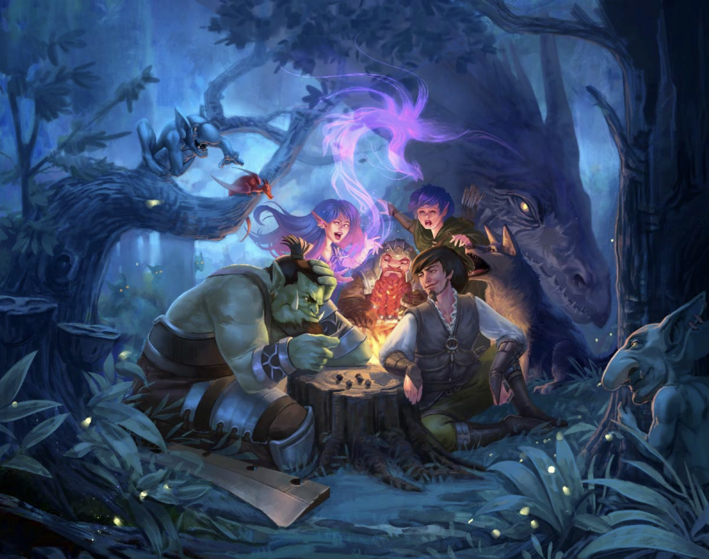

LE GRAND DUEL
Le Grand Duel est un jeu de rôle (RPG) où deux joueurs s'affrontent à travers une gamme de personnages aux capacités uniques.
Les classes principales incluent le Guerrier, robuste et équipé pour des attaques régulières ainsi qu'une attaque sécurisée ; le Barbare, capable d'entrer en furie pour déchaîner une attaque dévastatrice supplémentaire ; et enfin le Clerc, qui allie la capacité de se soigner à celle d'infliger des dégâts à ses ennemis.
L'objectif ultime du jeu est de réduire les points de vie de l'adversaire à zéro, en utilisant habilement les compétences et les stratégies propres à chaque classe.
Accès au repo Github